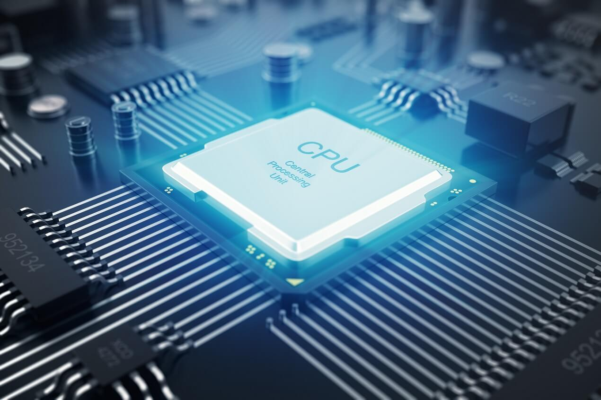
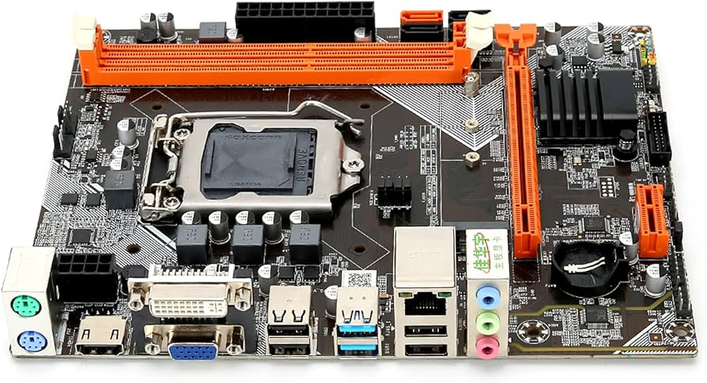
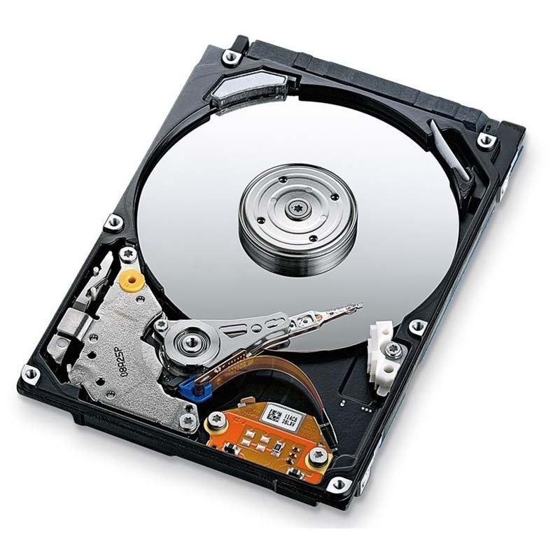

Componentes Esenciales de un Ordenador
Explorando el corazón del mundo digital
Imágenes de hardware informático:



El hardware de un ordenador es el conjunto de componentes físicos que permiten el funcionamiento de un equipo. Algunos de los elementos más importantes son:
- Procesador (CPU): Es el cerebro del ordenador, donde se realizan todos los cálculos y procesos.
- Placa base:Es el circuito principal donde se conectan todos los componentes.
- Memoria RAM:b>Proporciona un espacio temporal para que los datos sean procesados rápidamente.
- Disco Duro:Almacena la información del sistema y los datos del usuario.
Tipos de Hardware:
- Hardware de procesamiento:
- Procesadores:Como los Intel Core y AMD Ryzen, encargados de realizar todas las operaciones lógicas y aritméticas.
- Tarjetas gráficas (GPU):Especializadas en el procesamiento de gráficos, esenciales para el gaming y la edición de video.
- Hardware de almacenamiento:
- Discos duros (HDD):Ofrecen gran capacidad de almacenamiento a menor costo.
- Unidades de estado sólido (SSD):Son mucho más rápidas que los HDD tradicionales.
Tabla Comparativa de Componentes:
| Componente |
Tipo |
Capacidad |
Velocidad |
| Procesador Intel Core i7 |
CPU |
4.0 GHz |
Alta |
Alta |
| Procesador AMD Ryzen 5 |
CPU |
3.8 GHz |
Media |
Media |
| Disco Duro Seagate |
HDD |
2 TB |
Baja |
Bajo |
| Unidad SSD Samsung EVO |
SSD |
1 TB |
Alta |
Alta |
Opiniones de Expertos:
"Invertir en un buen procesador es clave para obtener un rendimiento óptimo en cualquier equipo." - Ing. Carlos García, Especialista en Hardware
"Las unidades SSD han revolucionado el mundo del almacenamiento, brindando rapidez y confiabilidad." - Sra. Laura Ramos, Experta en Tecnología
2024 Revista Digital. Para más información, contacta a info@revistadigital.com